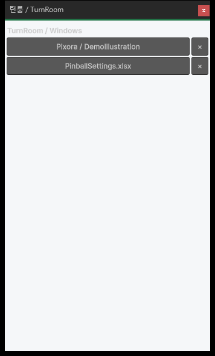
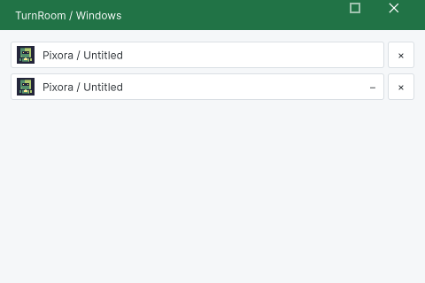

Tracefolio REPORTS & ISSUES
Tracefolio REPORTS & ISSUES공통 창 목록·리본·재로드·포커스의 실제 UI 회귀 수정
종료DataTable 기반 공통 UI를 유지하면서 창 목록 가림·테마 불일치·재로드 초기화 오류·리본 줄바꿈과 Pixora 다중 창 순서를 수정했습니다. 혼합·단독 설치를 실제 조작으로 확인했습니다.
작업 결과
공통 창 프레임과 UI Toolkit 템플릿의 재현된 결함을 수정했습니다. DataTable의 제품 소스·기존 IMGUI 편집 엔진·문서 닫기 정책은 수정하지 않았습니다.
변경 내용
재현 조건
Windows / Unity 6000.0.83f1 / Built-in. DataTable+Pixora 혼합 설치와 Pixora 단독 설치, 라이트/다크 테마.
재현 순서
- 두 제품을 열고 교차 클릭합니다.
- Pixora 새 창을 추가해 같은 제품의 두 창을 클릭합니다.
- 최소화 후 TurnRoom > Windows에서 복원합니다.
- 재컴파일 직후 UI Toolkit 창을 다시 그립니다.
- 영어 리본과 다크 모드 설정의 선택 항목을 관찰합니다.
기대 동작
선택한 도구 창이 앞에 있고 직전 보이는 도구도 기본 창 뒤로 숨지 않아야 합니다. 공통 목록이 조작 가능하고 동일한 템플릿·아이콘·제목줄을 사용해야 합니다. 재로드 초기화와 리본 글자, 선택 상태가 읽혀야 합니다.
실제 동작
수정 전 공통 목록은 전경 상태인데도 실제 DataTable 아래에 가려졌고 기본 다크 컨트롤과 라이트 배경이 섞였습니다. 같은 Pixora 창은 순서 보호에서 제외됐습니다. 재로드 직후 EditorStyles.label 초기화 전에 접근한 예외가 확인됐습니다. 영어 리본은 단어 중간이 분리됐고 다크 선택 글자 대비가 낮았습니다.
원인
공통 목록이 기존 utility GetWindow 경로를 사용해 도구 창과 다른 소유/표시 방식을 썼습니다. WindowFocus가 같은 ProductId를 제외하고 DataTable 선택 호스트에만 의존했습니다. UI Toolkit의 초기 그리기 시점에 IMGUI EditorStyles가 준비되어 있다고 가정했습니다. 리본이 자동 글자 줄바꿈을 허용했고 어두운 표면에 원래 강조색을 그대로 사용했습니다.
적용 내용
WindowList를 공통 ToolWindow·ShowPopup·공통 제목줄/크기 조절·아이콘/버튼으로 구성했습니다. 같은 제품 보호는 Pixora에만 확장해 기존 DataTable↔DataTable 정책을 유지합니다. DataTable의 선택 호스트가 있으면 위임하고 없으면 같은 프로세스·정확한 제목·유일한 Unity 기본 창을 확인하는 Windows 경로를 사용합니다. 최소화·이미 숨은 창이나 다른 앱을 일괄 앞으로 가져오지 않습니다.
EditorStyles 대신 실제 builtin inspector skin을 사용해 재로드 초기화를 보장합니다. 리본은 단어 경계에서 최대 두 줄로 나누고 글자 중간 자동 줄바꿈을 막습니다. 다크 선택 글자는 표면에 맞춘 accentInk를 사용합니다. 파일 대화상자 복귀도 공통 프레임의 별도 함수로 모았습니다.
검증


실제 DataTable↔Pixora 교차 클릭 8회, 같은 Pixora 창 클릭 8회, 단독 설치 클릭 8회와 목록 복원, 최대화/원래 크기 복원, 복제·개별 닫기, 파일 저장·취소 후 순서를 확인했습니다. 재로드 뒤 빈 Studio를 포함한 두 창의 버튼 구성과 예외 부재를 확인했습니다. 다크 선택 항목 2개에서 실제 해석된 전경 #9EBEB1 / 배경 #2C3838 대비 6.04를 측정했습니다.
혼합 설치 교차 클릭 · 같은 제품 클릭 · 단독 설치 · 최소화/복원 · 실제 색상 대비 · 대화상자 취소
남은 사항
Windows / Unity 6000.0.83f1 / Built-in에서 확인했습니다. 다른 운영체제·렌더 파이프라인·고DPI와 모든 외부 모델·셰이더 호환은 미확인입니다. DataTable 제품 소스는 수정하지 않았으며, 이전 작업에서 남은 DataTable 역사적 문서 캡처/소스 해시 불일치 206건은 이번에 통과 처리하지 않았습니다. 제품 브랜치는 codex/turnroom-integration이며 main 병합이나 Asset Store 출시는 수행하지 않았습니다.
작업 시간
- 제안 시간: 90–150분. 샘플 10개 구성, 실제 Unity 조작 QA, 문서·HTML 결과 보고까지를 범위로 제안했습니다.
- 실제로 완료된 시간: 구현·필수 QA·프로젝트 푸시까지 2시간 21분 47초. 시작 2026-10-30 03:42:35 KST, 프로젝트 푸시 완료 2026-10-30 06:04:22 KST. 중앙 보고서 생성·배포는 이후 진행하며 전체 종료 시각은 최종 채팅에 별도로 기록합니다.
- XERJ: 사용 — 실제 XERJ Search로 ApplyTutorialStep·BuildDocumentHeader·WindowShelf 후보를 조회하고 현재 소스와 대조했습니다. 이전 체크아웃 경로를 보던 journal 문제를 저장소 경로 해시별 인덱스로 분리해 복구한 뒤 Index와 FileDialog 검색을 실행했습니다. 자동 watcher 실행은 주장하지 않습니다.